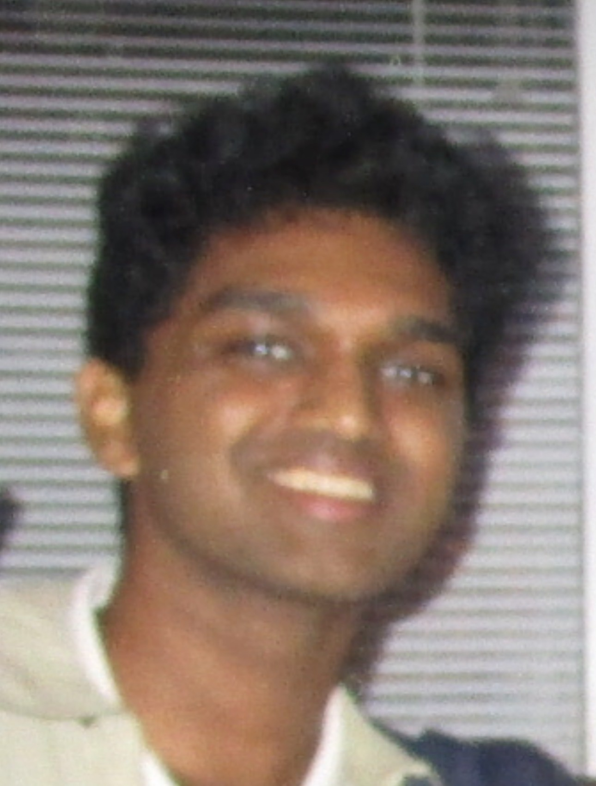

About Me
Hello! My name is Gokul Ramanan, and I’m studying Data Science and Mathematics at Northeastern University. I’m currently a sophomore and will soon be joining the Baltimore Orioles as a Software Developer. I’ve always been passionate about sports - especially pickleball, cricket, swimming, and tennis - and that passion naturally evolved into a curiosity about the data behind athletic performance. I began analyzing professional players and building models that predict career trajectories based on historical trends. Over time, this interest grew into a broader drive to develop prediction models that create real-world impact, particularly in sports analytics, finance, AI, and client-facing applications. I’ve worked on several projects that blend data visualization, statistical research, and machine learning to uncover complex patterns in sports, economics, and project management. Beyond academics, I’m a data scientist at Generate, where I’m currently contributing to Unsprawl, which is an application that helps project managers identify and deduplicate messages and workflows across multiple task-tracking platforms. This website will continue to share more about my interests, professional journey, and projects that show the more creative side of me.